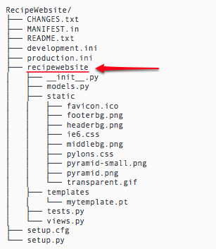

Setting up your development environment¶
In this tutorial we gather our tools. We assume that you already have a trusted text editor. So we will focus on the tools needed to build out the new application. It is recommended that you use a UNIX/Linux environment, though everything should also work on Windows.
Installing the Bottle web framework¶
You will need the following:
- A python interpreter
- The ability to compile source code
- and the python virtualenv package
If you are on a network with a proxy then pay careful attention to the next section.
Dealing with on campus proxies¶
locations that use a proxy on their network.
- Known UWI proxies
- scalpel, proxy-cluster, proxy1, proxy3, sword while we use scalpel in our examples any of the ones listed should work
- All proxies are configured to run on port 8080.
After launching the terminal (or commandline) it is important to set the http_proxy environmental variable, BEFORE running any other command
On Unix
export http_proxy=proxy3:8080
On Windows
the same can be acheived by using set instead of export:
set http_proxy=proxy3:8080
Note
For persons using sudo on Unix. Be careful if you use sudo on Unix, sudo may not inherit the http_proxy environment variable if you set it without sudo.
Using Virtualenv¶
Virtualenv allows you to create complete python environment without the need for administrative access.
To install Bottle, create a virtualenv:
mkdir venv
cd venv
virtualenv --no-site-packages .
When ever you need to use this environment use the command:
cd venv
source bin/activate
On Windows the following is enough
cd venv Scripts/activate
Note

Remember to activate your virtual environment! If you neglect this, pip will behave in unpredictable ways, you will get permission errors and other strange behaviour.
Then install bottle using the pip command:
pip install bottle
Note
pip stands for “Pip Installs Packages”, it is a package installer designed to install python packages (similar to apt-get on Debian or Ubuntu). It has been affectionately referred to as the new hotness.
{kind=link}
Creating the scaffolds for our project¶
Establishing conventions help to make source code more maintainable, Bottle does not provide a standard approach to managing our code so we will make some decisions ourselves.
Note
the term “scaffold” comes form the construction industry and roughly means “structure”.
We will use the following directory structure:
RecipeWebsite/
└── recipewebsite
├── static
└── templates
This structure will be very useful if we later on decided to make our site into a full python packages.
Enter the RecipeWebsite/recipewebsite folder
Note
Remember to activate your virtual environment!
Create a file called app.py Your directory will now look like this
RecipeWebsite/
└── recipewebsite
├── app.py
├── static
└── templates
To view the new application in your browser run the following command:
python app.py
Warning
sometimes this will will fail because another service on your machine may already be running on the port (you can change the port in the app.py file or stop the conflicting service).
Visiting http://localhost:8080 in your browser will display the following text in your browser:
.. image:: ../images/pyramid_app_running.jpg
Requirements and setup.py¶
If you need new functionality you can declare a requirement in your new package. This will prove very useful in the future.
Take a look at setup.py Note the requires lines:
requires = [
'pyramid',
'pyramid_zodbconn',
'pyramid_tm',
'pyramid_debugtoolbar',
'ZODB3',
'waitress',
]
Each of these refers to a package that our RecipeWebsite application depends on. When the python setup.py develop command is invoked the required dependencies are installed.
Where the code lives¶
Throughout this project, most of your code and customizations will be done in the recipewebsite subdirectory. Note that the subdirectory is all lowercase, even though the package directory is RecipeWebsite.
Discussion¶
What is the benefit of using the pcreate command to create a directory structure?
We used pip to install packages, in python circles packages are often called eggs, can you guess why?
In what way do conventions make source code more maintainable?
Any thoughts on what happens when you use virtualenv and the source bin/activate command?
What do you think happens when you set the http_proxy environment variable.?
- What might cause an error like this:
socket.error: [Errno 48] Address already in use